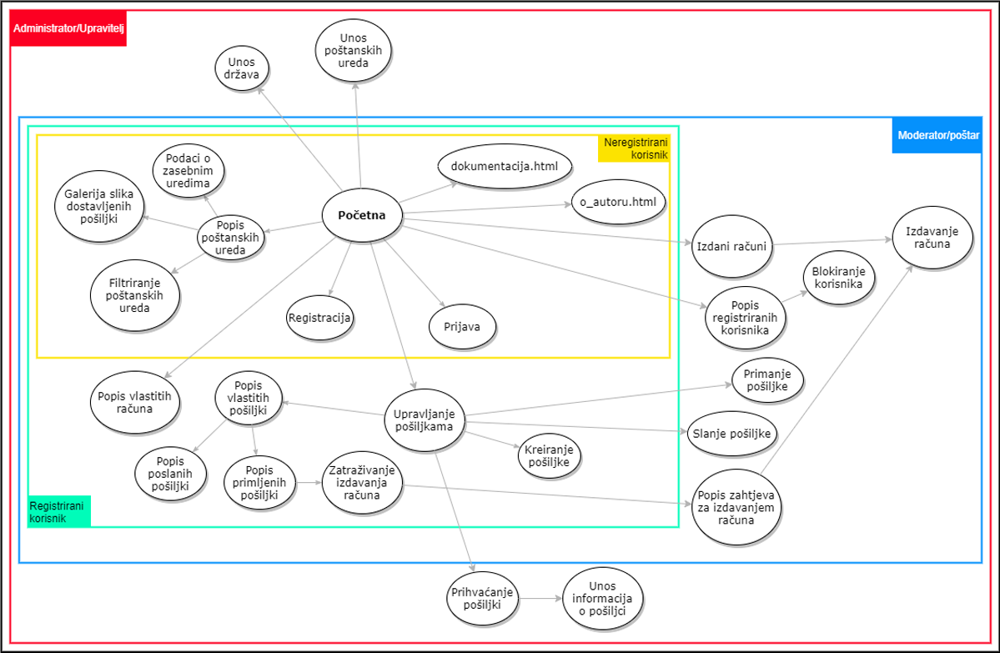

Dokumentacija
Opis projektnog zadatka
Sustav za upravljanje postupka razmjene pošiljke između korisnika poštanskih ureda
koji su raspodjeljeni po ulogama.
Opis projektnog rješenja
Projekt nedovršeno napravljen u Visual Studiu uz pomoć PHP, AJAX, jQuery, javascript, HTML i CSS programskih jezika.
ERA model
Navigacijski dijagram
Datoteke i skripte
index.php - početna stranica za sve korisnike osim administratora.
/html
administrator.php - početna stranica za administratora.
prijava.php - stranica na kojoj se korisnici prijavljuju.
registracija.php - stranica na kojoj neregistrirani korisnik postaje registrirani.
autor.html - osnovne informacije o autoru.
upravljanje_posiljkama.php - stranica na kojoj se može vidjeti tablica pošiljki.
postanski_uredi.php - stranica na kojoj se nalazi tablica poštanskih ureda.
izdani-racuni.php - stranica na kojoj se nalazi tablica izdanih računa.
korisnici.php - stranica na kojoj se nalazi tablica korisnika i na kojoj administrator može blokirati, brisati, dodavati i izmjenjivati korisnike.
drzave.php - stranica sa tablicom država.
noviModerator.php - stranica na kojoj administrator dodaje novog moderatora.
zaboravljenaLozinka.php - stranica na kojoj korisnik zatraži resetiranje lozinke i slanje iste na mail.
aktivacija.php - stranica na kojoj registrirani korisnik aktivira svoj račun.
/css
style.css - CSS file za ekrane širine veće od 768px.
stylemobile.css - CSS file za mobilne uređaje.
/images
Slike - korištene u projektu.
/javascript
bculovic_jquery.js - jQuery, AJAX i javascript file.
bculovic.js - javascript file.
/php
baza.class.php - skripta za spajanje sa bazom podataka.
drzave.php - skripta za dohvaćanje država iz baze podataka.
https.php - skripta za stavljanje stranica na sigurnu vezu.
korisnici.php - skripta za dohvaćanje korisnika iz baze podataka.
odjava.php - skripta za odjavu korisnika.
postanski_uredi.php - skripta za dohvat poštanskih ureda.
registracija.php - skripta za registraciju korisnika.
session.php - skripta koja započinje i održava sesiju.
upravljanjePošiljkama.php - skripta za dohvat pošiljki iz baze podataka.
Alati i programski jezici
Programski jezici
HTML - standardni jezik koji govori stranici što će prikazivati.
CSS - opisni jezik koji uređuje stranicu..
Javascript - programski jezik koji iz statične stranice stvara dinamičnu stranicu.
jQuery - javascriptova biblioteka za lakše rukovanje Ajaxom.
AJAX - programski jezik za stvaranje asinkronih stranica koristeći javascript i xml.
PHP - programski jezik za rad na strani poslužitelja.
Alati
Visual Studio Code - korišten za pisanje svog koda.
FileZilla - alat korišten za slanje datoteka na server.
Chrome - web preglednik korišten za testiranje.
Mozilla Firefox - web preglednik korišten za testiranje.